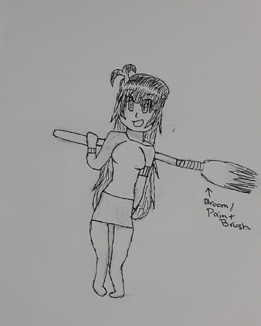
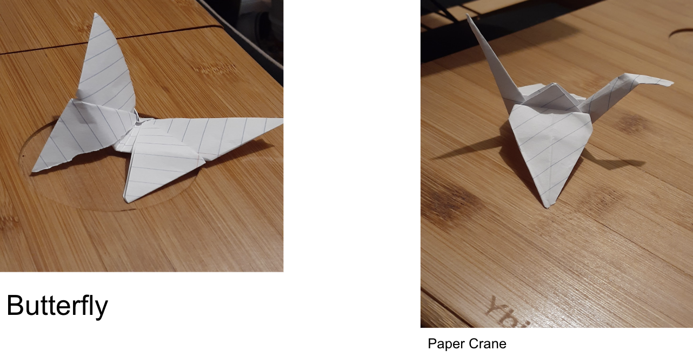
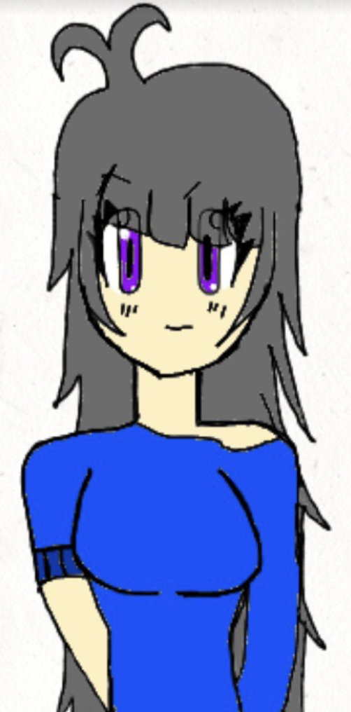
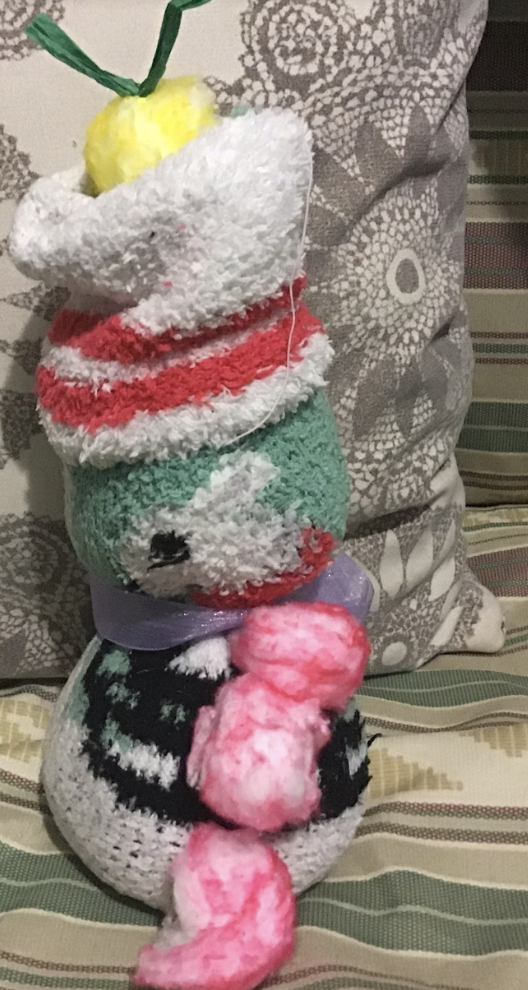
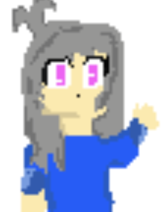

This is an Among Us drawing with our favorite hobbies inside it. This drawing was our base to drawing all our favorite hobbies in one place. This was drawn through a paper and pencil.
...
This image was to create a made up character. With this character we would draw them with an everyday house item.This was drawn through a paper and pencil.
...
In this assignment, we made a craft using only paper based on any animal.
...
This drawing was a free draw. We were available to draw anything that came to mind for those who needed extra credit in class so long as it was creative and colorful.
...
This is a sock snowman. Inside of it is rice in order to keep it steady and the cotton balls were colored over with a marker to complete the buttons and hat. String was used as a replacement for the scarf.
...
This was a optional pixel image. We used a website in order to help us create the pixel-like feature.